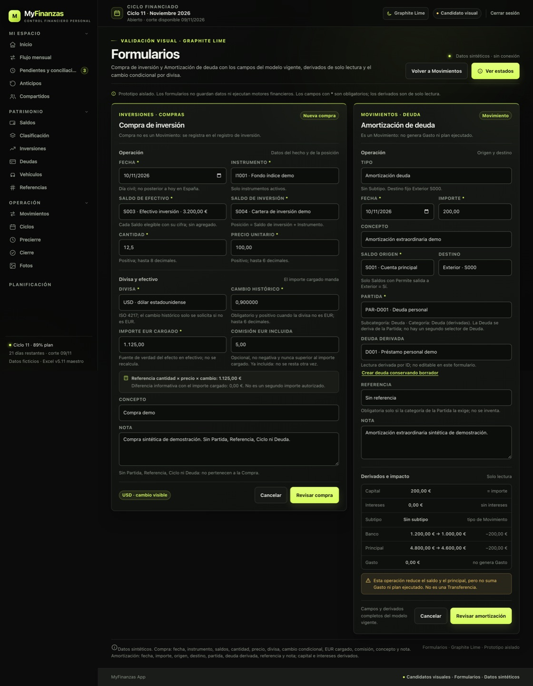
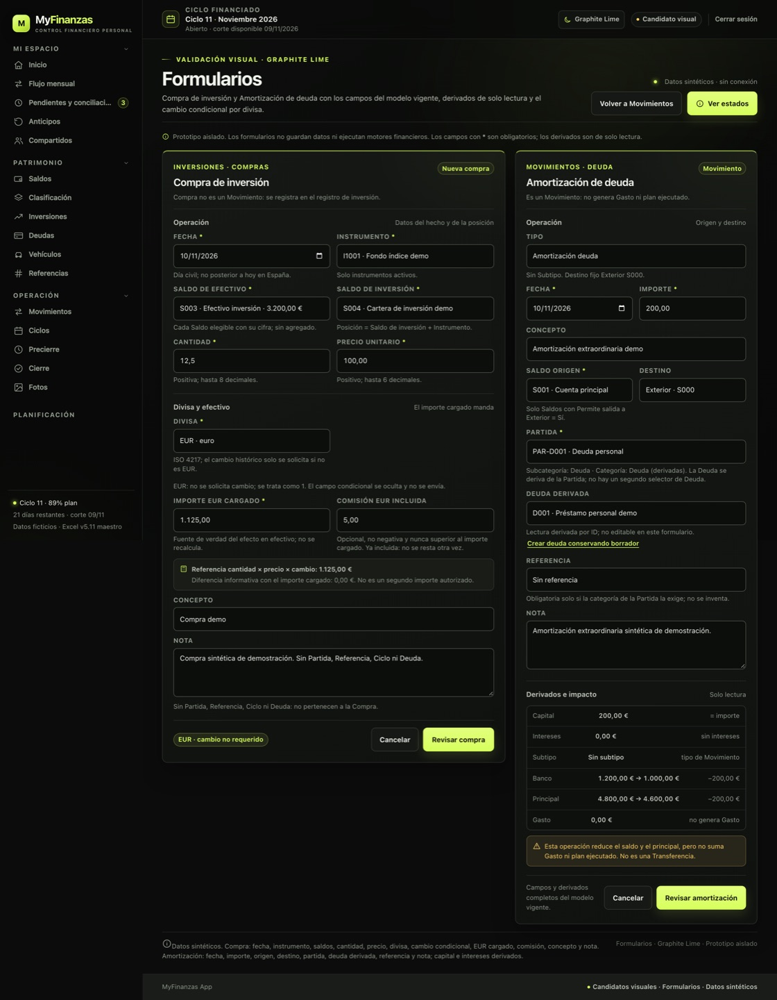
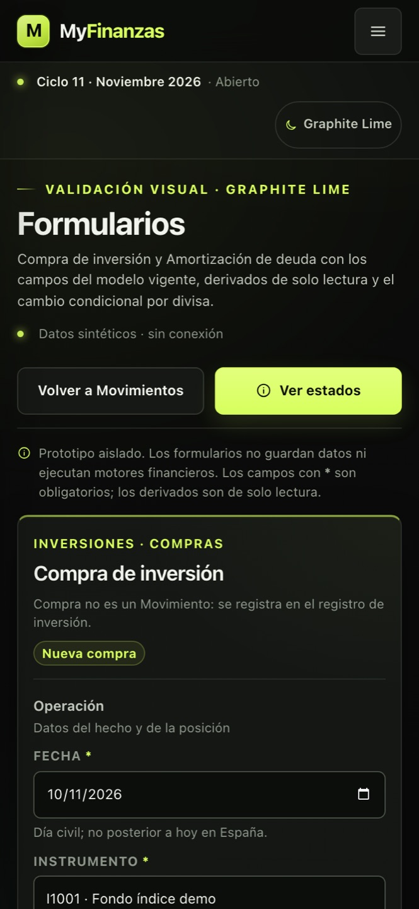

MyFinanzas · Graphite Lime · Formularios
Compra de inversión y Amortización de deuda
Campos completos del modelo vigente, cambio condicional por divisa y derivados de solo lectura.
Prototipo aislado. No guarda datos ni conecta con API o SQLite. Las fechas nativas se muestran en formato español en la captura; el formulario conserva el control de fecha del producto.



Campos condicionales
USD muestra «Cambio histórico» y lo marca obligatorio. EUR lo oculta, lo desactiva y explica que se trata como 1; el foco salta directamente a «Importe EUR cargado».
Compra de inversión
Fecha, instrumento, saldo de efectivo con cifra, saldo de inversión, cantidad, precio, divisa, cambio condicional, EUR cargado, comisión incluida, concepto y nota. Sin Partida, Referencia, Ciclo ni Deuda.
Amortización de deuda
Tipo, fecha, importe, concepto, origen, destino Exterior, partida, deuda derivada, referencia y nota. Capital = importe, intereses = 0 y sin Gasto. Los campos y derivados conservan el modelo.
Validación visual. Los formularios son demostrativos; no hay lógica financiera. Las compras no son Movimientos; las amortizaciones sí.